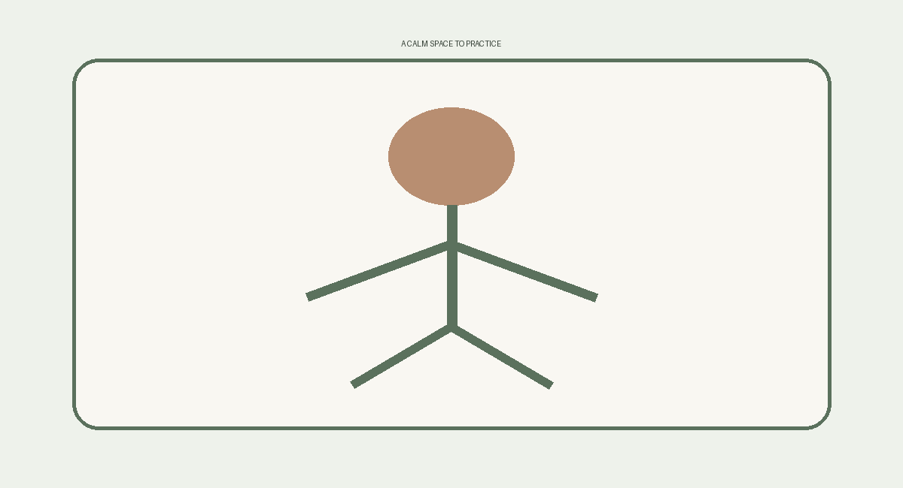
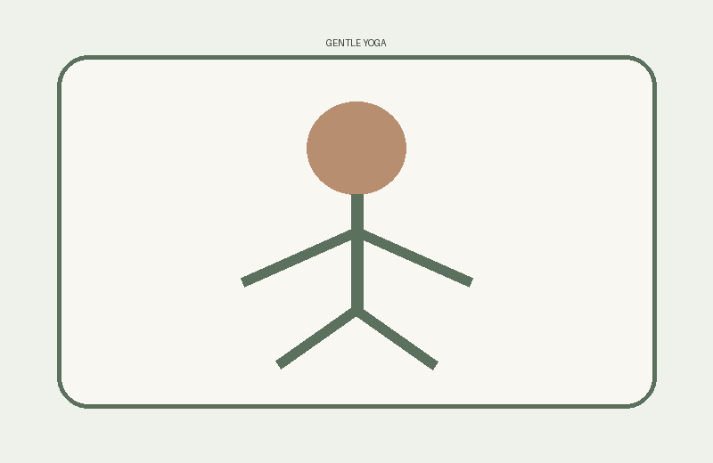

Our Mission
Riverbend Yoga Studio offers calm, inclusive, and supportive yoga experiences for people at every stage of their practice. Our goal is to help students build strength, flexibility, confidence, and relaxation in a welcoming environment.

New to Yoga?
Beginners are always welcome. Our instructors explain poses clearly, offer modifications, and encourage you to move at a pace that feels comfortable for your body.
Featured Class: Gentle Yoga

Gentle Yoga uses comfortable movements, breathing, and stretching to support mobility and relaxation.
Schedule Overview
- Monday morning: Gentle Yoga
- Wednesday evening: Vinyasa Yoga
- Friday evening: Restorative Yoga
- Saturday: Private sessions by request